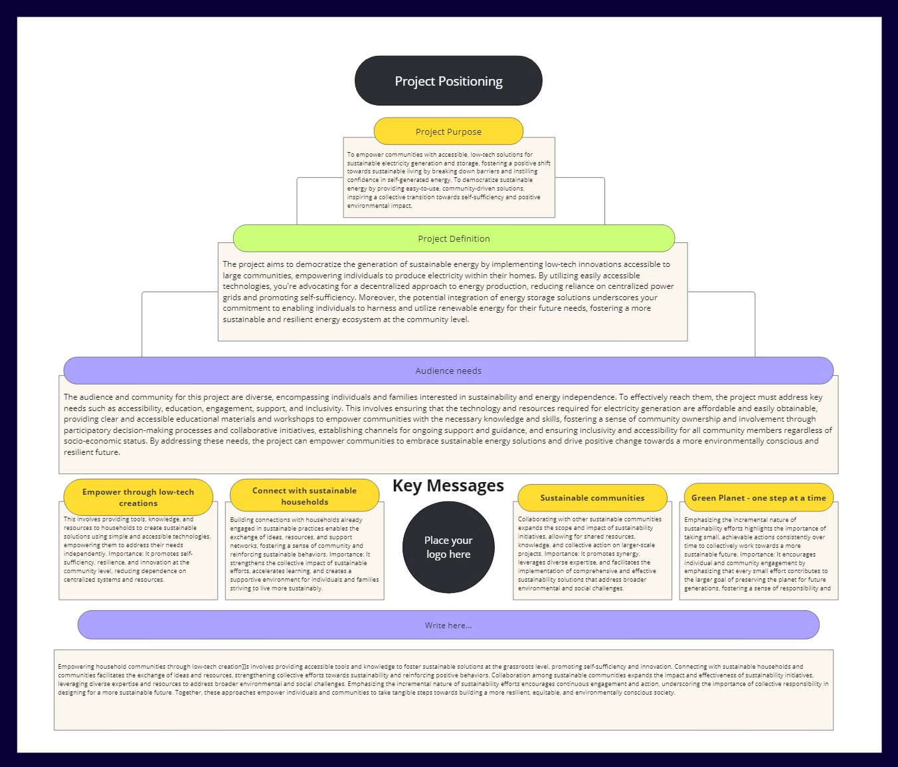

HTML Website MakerLearning how to perceive and showcase my projects is an important practice to master, especially in such sensitive times. This seminar was an great module that allowed me to go back to middle school and learn how to tell a story. This term I will focus on conveying my ideas and project to the world and required communities.
Describe your Project in one paragraph
The project aims to democratize the generation of sustainable energy by implementing low-tech innovations accessible to large communities, empowering individuals to produce electricity within their homes. By utilizing easily accessible technologies, you're advocating for a decentralized approach to energy production, reducing reliance on centralized power grids and promoting self-sufficiency. Moreover, the potential integration of energy storage solutions underscores your commitment to enabling individuals to harness and utilize renewable energy for their future needs, fostering a more sustainable and resilient energy ecosystem at the community level.
Describe your project in 16 words
The facilitation of sustainable energy, enabling communities to generate and store electricity from low technology equipment.
Describe your project in 8 words
Sustainable generation of electricity from low technology equipment.
Purpose of the Project in a Tweet
Empowering communities with accessible tech to generate and store sustainable energy, ensuring a greener, self-sufficient future! #RenewableEnergy #CommunityPower
Purpose from ChatGPT prompt
To empower communities with accessible, low-tech solutions for sustainable electricity generation and storage, fostering a positive shift towards sustainable living by breaking down barriers and instilling confidence in self-generated energy. To democratize sustainable energy by providing easy-to-use, community-driven solutions, inspiring a collective transition towards self-sufficiency and positive environmental impact.

Miro Canvas
The "Communicating Ideas" module was an exceptionally impactful experience that equipped me with essential skills for articulating my projects to the appropriate communities using the correct terminology. This module provided a comprehensive understanding of how to effectively convey complex concepts in a clear and relatable manner, ensuring that my message resonated with diverse audiences.
One of the most significant takeaways from this module was the importance of tailoring my communication to suit different communities. Understanding the unique perspectives, interests, and knowledge levels of various groups allowed me to adapt my explanations to be more engaging and accessible. This skill is crucial for bridging the gap between technical details and broader audience comprehension, ensuring that my projects are understood and appreciated by all stakeholders involved.
Learning to use the correct terminology was another vital aspect of this module. It emphasized the need for precision in language to convey ideas accurately and professionally. Mastering the appropriate jargon not only enhanced my credibility but also facilitated more effective communication with experts and peers within my field. This attention to detail in language use is essential for establishing clear and meaningful dialogue in any professional context.
The module also underscored the value of storytelling in communicating ideas. By framing my projects within compelling narratives, I learned to capture the interest and imagination of my audience, making my presentations more memorable and impactful. This approach helped me highlight the relevance and potential impact of my work, fostering greater engagement and support from the communities I addressed.
Moreover, the practical exercises and feedback sessions within the module were invaluable. They provided me with opportunities to practice and refine my communication skills in real-time, receiving constructive critiques that helped me improve continuously. These hands-on experiences were instrumental in building my confidence and competence in presenting my ideas effectively.
Overall, the "Communicating Ideas" module was a transformative learning journey that significantly enhanced my ability to articulate my projects to the right audiences using the appropriate terminology. The skills and insights gained from this module will undoubtedly be beneficial as I continue to share my work with diverse communities and strive to make a meaningful impact in my field.
HTML Website Maker